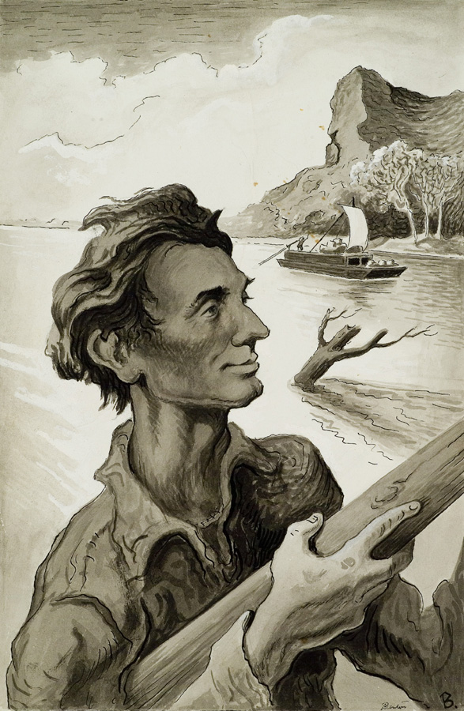

by Nikki Veen
Abe Lincoln was the inspiration for this classic country song: Young Abe Lincoln Make a Tall, Tall Man by Johnny Horton. The lyrics tell some of the story of his young life.
Well, he lived in a cabin way down by the creek
He ran through the dust in his bare feet
But they didnt know that one fine day
That he would rule this U.S.A.
And be the best leader in all the land
Yes, Young Abe Lincoln make a tall, tall man
Yes, Young Abe Lincoln make a tall, tall man
He walked many miles to school every day
And no kind of weather could keep him away
A learnin to read and a learnin to write
He whipped many men in a wrestlin fight
He whipped many of em with just one hand
Yes, Young Abe Lincoln make a tall, tall man
Yes, Young Abe Lincoln make a tall, tall man
Now he was admitted to the lawyers bar
People seeked his help from near and far
Ha could talk a country mile in an old court room
Make a man laugh whose life was doomed
He out talked Douglas or fancy Dan
Yes, Young Abe Lincoln make a tall, tall man
Yes, Young Abe Lincoln make a tall, tall man
We had a big war while he was President
Finally won with the U.S. Grant
He heard both sides of the battle of rights
He hated to see those soldiers die
He hated to fight his own south land
Yes, Young Abe Lincoln make a tall, tall man
Yes, Young Abe Lincoln make a tall, tall man
Abraham Lincoln was born Sunday, February 12, 1809, in a log cabin near Hodgenville, Kentucky. He was the son of Thomas and Nancy Hanks Lincoln, and he was named for his paternal grandfather. Thomas Lincoln was a carpenter and farmer. Both of Abraham's parents were members of a Baptist congregation which had separated from another church due to opposition to slavery.
When Abraham was seven, the family moved to southern Indiana. Abraham had gone to school briefly in Kentucky and did so again in Indiana. He attended school with his older sister, Sarah (his younger brother, Thomas, had died in infancy). In 1818 Nancy Hanks Lincoln died from milk sickness, a disease obtained from drinking the milk of cows which had grazed on poisonous white snakeroot. Thomas Lincoln remarried the next year, and Abraham loved his new stepmother, Sarah Bush Johnston Lincoln. She brought three children of her own into the household. Abraham attended school at irregular intervals. In all he spent less than 12 months going to school, and he didn't attend college at all.
As Abraham grew up, he loved to read and preferred learning to working in the fields. This led to a difficult relationship with his father who was just the opposite. Abraham was constantly borrowing books from the neighbors.
In 1828 Abraham's sister, who had married Aaron Grigsby in 1826, died during childbirth. Later in the year, Abraham made a flatboat trip to New Orleans. In 1830 the Lincolns moved west to Illinois.
The next year Lincoln made a second flatboat trip to New Orleans. Afterwards he moved to New Salem, Illinois, where he lived until 1837. While there he worked at several jobs including operating a store, surveying, and serving as postmaster. He impressed the residents with his character, wrestled the town bully, and earned the nickname "Honest Abe." Lincoln, who stood nearly 6-4 and weighed about 180 pounds, saw brief service in the Black Hawk War, and he made an unsuccessful run for the Illinois legislature in 1832. He ran again in 1834, 1836, 1838, and 1840, and he won all four times. Lincoln was a member of the Whig Party; he remained a Whig until 1856 when he became a Republican. Additionally, he studied law in his spare time and became a lawyer in 1836. Stories that Lincoln had a romance with a pretty girl named Ann Rutledge may well be true. Sadly, Ann died in 1835.
In Springfield in 1839 Lincoln met Mary Todd. Three years later they were married and over the next 11 years had four children: Robert (1843-1926), Edward ("Eddie") 1846-1850, William ("Willie") 1850-1862, and Thomas ("Tad") 1853-1871. Lincoln became a successful attorney, and the family bought a home at the corner of Eighth and Jackson in 1844.
In 1846 Lincoln ran for the United States House of Representatives and won. While in Washington he became known for his opposition to the Mexican War and to slavery. He returned home after his term and resumed his law practice more seriously than ever. Early in 1851 Lincoln's father died.
Lincoln's declining interest in politics was renewed by the passage of the Kansas-Nebraska Act in 1854. He made an unsuccessful bid for the U.S. Senate but received some support for the Republican vice-presidential nomination in 1856. Also, in 1856 Lincoln gave his Lost Speech. He opposed the Dred Scott decision in 1857 and gave his famous "House Divided" Speech on June 16, 1858. Additionally, he engaged in a series of debates with Stephen A. Douglas in 1858. Lincoln was against the spread of slavery into the territories but was not an abolitionist. Douglas won the Senatorial race, but Lincoln gained national recognition. In 1860 he furthered his national reputation with a successful speech at the Cooper Institute in New York.